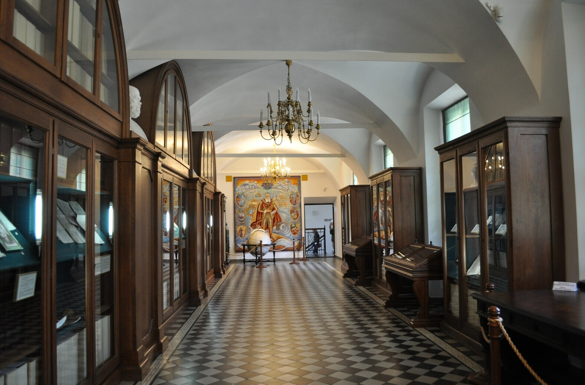

.
Несвижский замок


Несвижский замок — дворцово-замковый комплекс, находящийся в
северо-восточной части города Несвижа в Минской области, памятник
архитектуры XVI-XVIII веков. Заложен князем Н. Х. Радзивиллом Сироткой в
1583 году, на месте деревянного замка (1533). В начале (до 1599 г.) в
строительстве замка участвовал итальянский архитектор Дж Бернардони. В
XVI-XX вв — резиденция князей Радзивиллов. Включает в себя собственно
замок, замковые укрепления, а также большой ландшафтно-пейзажный парк.
Несвижский замок является родоначальником нового типа бастионных
укреплений в Беларуси — так называемой новоитальянской системы. На момент
постройки замок считался одной из самых сильных и совершенных построек
подобного типа. В замке не было недостатка в артиллерии, ручном
огнестрельном оружии и военной амуниции. Замок имел важное военное
значение на протяжении нескольких столетий, был местом концентрации
частной армии Радзивиллов. В общей планировке и структуре Несвижского
замка заметна тенденция к симметричности. Центральный корпус, значительно
перестроенный в XVIII веке, выделяется своим архитектурно-художественным
решением. Пилястры, рельефные декорации, скульптурные заставки придают
фасаду пластичность, богатая лепнина высокого фронтона с гербом — роскошь
и торжественность. С тыльной стороны центрального корпуса находится
двухэтажная пристройка с террасой и двумя угловыми башнями, а в восточной
восьмигранной башне на втором этаже — часовенка князя, перекрытая
небольшим куполом с лепниной. Башня с аркой въезда в замок вынесена вперёд
к мосту и исполнена в виде парадных ворот, характерных для белорусского
зодчества. Арка переходит в туннель со сводами, который прорезает насыпной
вал и выходит во двор напротив центрального корпуса. Такой приём создаёт
интересную глубинную перспективу. Внешне дворец выглядел всегда очень
романтично: монументальная постройка с гармоничными башнями разного
размера, поднятая над водой, тонет в зелени деревьев. Средневековый
феодальный замок после нескольких перестроек превратился в
дворцово-парковый ансамбль с большим открытым двором, окружённым
монументальными постройками. В нём переплелись множество архитектурных
стилей, что свидетельствует об использовании художественных достижений
разных исторических эпох. Украшенный стройными башнями и башенками,
комплекс приобрёл романтическую привлекательность, а вода в прудах и яркая
зелень ландшафтного замка завершили формирование дворцово-замкового
комплекса, одного из лучших в Восточной Европе. Архитектурный ансамбль
Несвижского замка в настоящее время представляет собой историко-культурный
музей-заповедник. С 2005 года вместе с расположенным в стороне Фарным
костёлом внесён во Всемирное наследие ЮНЕСКО.